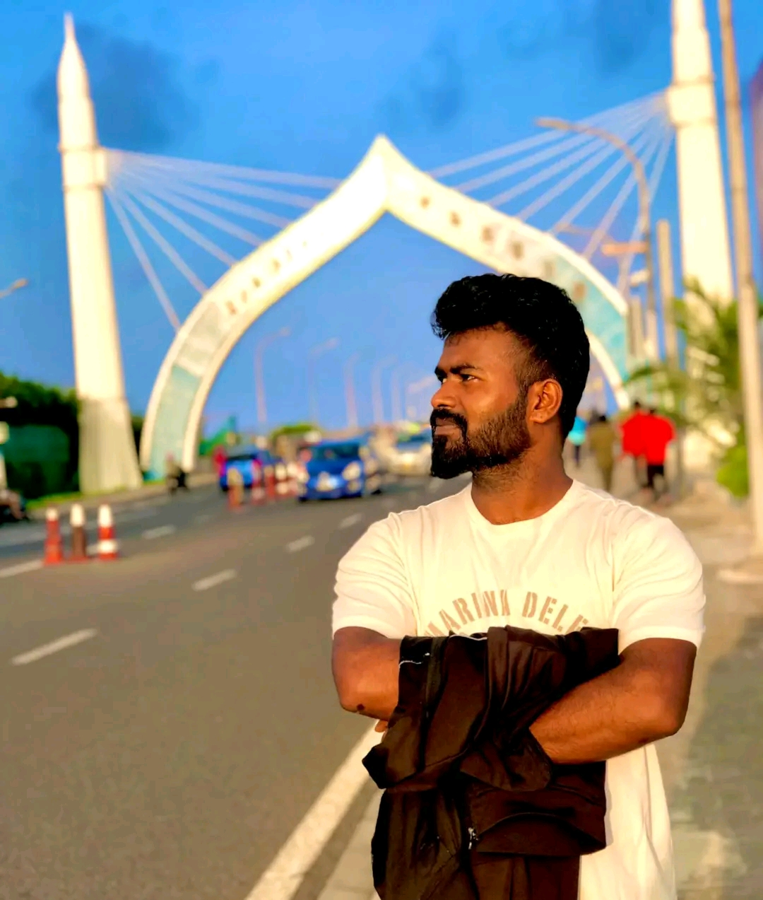

FATHER
Mr. Bisheshwar Raut
My father and an important part of my family.
Civil Construction Professional
Diploma-qualified civil construction professional with practical experience in metro rail, building and infrastructure projects. Focused on site execution, reinforcement works, quantity estimation, BOQ, BBS and construction coordination.

I am Ajay Kumar Raut, a Nepali civil construction professional currently based in Dubai, UAE. My experience spans metro rail, building and commercial construction, school and healthcare infrastructure, roads, highways and water-supply projects.
I combine hands-on site knowledge with technical skills in drawing interpretation, reinforcement detailing, site measurements, quantity take-offs, BOQ preparation, BBS and billing documentation.
I value safe working practices, clear communication, teamwork and quality execution in line with approved drawings and project requirements.
I am proud of my roots and the values that have shaped my journey. My family remains my biggest motivation to work hard, stay grounded and keep moving forward.
Hard work, honesty, responsibility, respect and continuous learning guide both my personal and professional life.
I believe every opportunity is a chance to learn, contribute and build a better future for the people who matter most.
My family is my biggest motivation. Their love, support and encouragement give me strength to keep working hard and moving forward.
My father and an important part of my family.
My mother and a constant source of love and inspiration.
My life partner. We got married in Bihar, India.
My brother and a valued member of my family.
Proud of my roots in Mahottari, Nepal. Passionate about Civil Engineering and Infrastructure Development. I believe in hard work, honesty and continuous learning. My family is my biggest motivation, and my dream is to become a successful Civil Engineer.
Starting in Mahottari, Nepal, I pursued a Diploma in Civil Engineering and built the technical foundation for a career in construction and infrastructure.
I developed practical experience through building, school, hospital, road, highway and water-supply projects, working with estimation, BOQ, BBS, measurements and site execution.
Today, I contribute to the Dubai Blue Line Metro Project, supporting site coordination and reinforcement activities while continuing to strengthen my professional capabilities.
— Ajay Kumar Raut
Experience supporting civil construction delivery across major infrastructure and building sectors.
Coordinate site activities with engineering and construction teams; monitor reinforcement and steel-fixing works; check cover-block installation; follow approved drawings; and communicate daily work progress, manpower and site requirements.
Supported building, school, hospital, road, highway and water-supply projects, including quantity estimation, BOQ, BBS, site measurements, billing documentation and execution activities.
A practical mix of site delivery, civil engineering documentation and construction coordination skills.
Dr. K.N. Modi University, Newai, Rajasthan, India.
Shree Bherukhi Higher Secondary School, Mahottari, Nepal.
I welcome opportunities in civil construction, site engineering and infrastructure projects. Feel free to contact me or connect professionally.